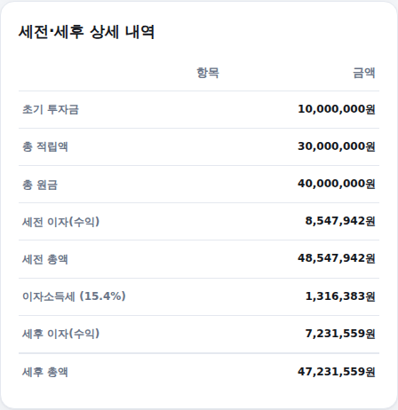

"지금 목돈이 얼마 있고, 매달 얼마씩 더 넣으면 몇 년 뒤 자산이 얼마가 될까?" 자산 시뮬레이터는 초기 투자금과 매월 적립금을 함께 반영해 미래 자산을 계산해드립니다. 쓰는 법은 아래와 같습니다.
-
초기 투자금·월 적립금·수익률·기간 입력
초기 투자금과 월 적립금은 하나를 0으로 두어도 됩니다. 예상 연 수익률과 투자 기간(개월)도 함께 입력하세요.
입력 화면
-
예상 미래 자산(세후) 확인
이자소득세 15.4%를 뗀 세후 미래 자산이 바로 나옵니다.
결과 화면 (초기 1,000만원 + 월 50만원·연 6%·60개월 예시)
-
세전·세후 상세 내역 확인
초기 투자금, 총 적립액, 총 원금, 세전·세후 이자(수익), 세전·세후 총액을 한눈에 비교할 수 있습니다.

세전·세후 상세 내역 화면
계산 기준
초기 투자금은 원금 × (1+월수익률)^개월수로, 매월 적립금은 매월 초 납입을 가정한 연금(annuity-due) 공식으로 각각 계산한 뒤 더합니다. 둘 다 매월 복리로 고정 계산하며, 이자소득세는 일반과세 기준 15.4%를 적용했습니다.
계산은 참고용이며, 실제 투자 수익률은 원금 손실을 포함해 예측과 다를 수 있습니다.